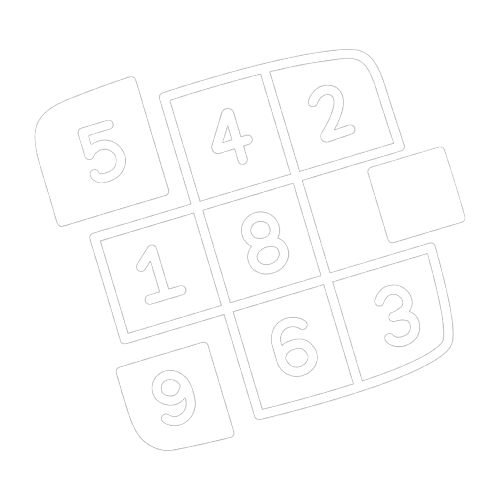

Super Sudoku
👩🏻🏫 多项研究和专家已证实，经常玩数独可以提高多种智力 📚
😎 这就像带着你的大脑去健身房，但不需要使用重物或器械 🥊
Easy Peasy 太简单了
Normal 普普通通
Sudoku Master 数独大师
New Game 新游戏
Solve 一键通关🔍
Clear Errors 清除
Tip: Click a cell to highlight its row, column, and 3x3 box.